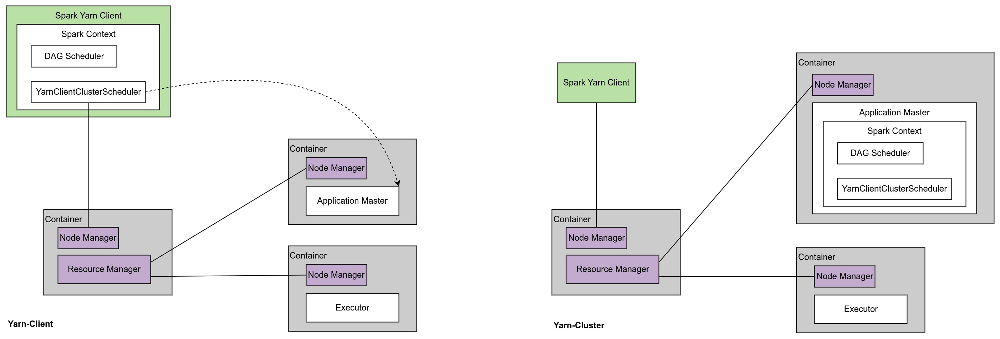

Ch02-Spark 应用执行模式
July 10, 2018
Spark 应用执行模式的不同主要体现在 Cluster Manager 使用的是哪个。如果是单独的进程，那么就是 Standalone 模式；如果是 Hadoop Yarn，那就是 Hadoop Yarn 模式。
1. Cluster Mananger #
| 类型 | 说明 |
|---|---|
| Standalone | a simple cluster manager included with Spark that makes it easy to set up a cluster. |
| Hadoop YARN | the resource manager in Hadoop 2. |
| Apache Mesos | a general cluster manager that can also run Hadoop MapReduce and service applications. (Deprecated) |
| Kubernetes | an open-source system for automating deployment, scaling, and management of containerized applications. |
2. Yarn 部署模式 #
Cluster Mananger 选择 Yarn 的时候存在两种部署模式，一种是 client，一种是 cluster。
bin/spark-submit --master yarn --deploy-mode client
bin/spark-submit --master yarn --deploy-mode cluster
client 和 Cluster 唯一的不同点是 Spark Context 运行在哪里。如果运行在 Spark Yarn Client 中，那便是 Client 模式，如下图左所示；如果运行在 Application Master 中，那便是 Cluster 模式，如下图右所示。
